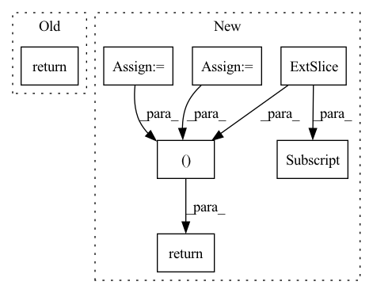

Pattern ID :602
Before Change
outputs = self.head_forward(self.backbone(input_image))
parsed_results = self.parsing_outputs(outputs)
return parsed_results
if __name__ == "__main__":
model = ROMPv1().cuda()After Change
x = self.backbone(image)
x = torch.cat((x, self.coordmaps.to(x.device).repeat(x.shape[0],1,1,1)), 1)
params_maps = self.final_layers[1](x)
center_maps = self.final_layers[2](x)
cam_maps = self.final_layers[3](x)
// to make sure that scale is always a positive value
cam_maps[:, 0] = torch.pow(1.1,cam_maps[:, 0])
params_maps = torch.cat([cam_maps, params_maps], 1)
return center_maps, params_maps
def export_model_to_onnx_static(model, save_file, bs=1):In pattern: SUPERPATTERN
Frequency: 4
Non-data size: 7
Instances Fragment ID: 2053662
Project Name: arthur151/romp
Commit Name: 623687a37cb7d1ba4538baf1e3c6f65808a36e2c
Time: 2022-03-18
Author: yusun@stu.hit.edu.cn
File Name: simple_romp/romp/model.py
M Class Name: ROMPv1
N Class Name: ROMPv1
M Method Name: forward(2)
N Method Name: forward(2)
M Parent Class: nn.Module
N Parent Class: nn.Module
M File Name: simple_romp/romp/model.py
N File Name: simple_romp/romp/model.py
M Start Line: 473
M End Line: 476
N Start Line: 472
N End Line: 481
Before Change
// Reverse order, so if we stack MAFs, correct things happen.
z = z.flip(dims=(1,)) if self.parity else z
log_det = torch.sum(s, dim=1)
return z, log_det
def inverse(self, z):
// we have to decode the x one at a time, sequentiallyAfter Change
def forward(self, z):
// we have to decode the x one at a time, sequentially
x = torch.zeros_like(z)
log_det = torch.zeros(z.size(0))
z = z.flip(dims=(1,)) if self.parity else z
for i in range(self.dim):
st = self.net(x.clone()) // clone to avoid in-place op errors if using IAF
s, t = st.split(self.dim, dim=1)
x[:, i] = (z[:, i] - t[:, i] ) * torch.exp(-s[:, i])
log_det += -s[:, i]
return x, log_det
class IAF(MAF):
Reverses the flow of MAF, giving an Inverse Autoregressive Flow (IAF) Fragment ID: 2053709
Project Name: janosh/torch-mnf
Commit Name: 89ce9b3eb1de8e735e68602768c84ad28cbdd251
Time: 2020-08-23
Author: janosh.riebesell@gmail.com
File Name: torch_mnf/flows/maf.py
M Class Name: MAF
N Class Name: MAF
M Method Name: forward(2)
N Method Name: forward(2)
M Parent Class: nn.Module
N Parent Class: nn.Module
M File Name: torch_mnf/flows/maf.py
N File Name: torch_mnf/flows/maf.py
M Start Line: 33
M End Line: 39
N Start Line: 43
N End Line: 51
Before Change
block_forecasts = torch.stack(block_forecasts)
block_forecasts = block_forecasts.permute(1, 0, 2)
return forecast, block_forecasts
After Change
encoder_mask = encoder_mask.unsqueeze(-1)
level = encoder_y[:, -1:].repeat(1, decoder_x_t.size(1), 1) // Level with Naive1
block_forecasts = [level]
block_backcasts = [encoder_y[:, -1:] .repeat(1, encoder_y.size(1), 1)]
forecast = level
for block in self.blocks:
block_backcast, block_forecast = block(
encoder_y=residuals, encoder_x_t=encoder_x_t, decoder_x_t=decoder_x_t, x_s=x_s
)
residuals = (residuals - block_backcast) * encoder_mask
forecast = forecast + block_forecast
block_forecasts.append(block_forecast)
block_backcasts.append(block_backcast)
// (n_batch, n_t, n_outputs, n_blocks)
block_forecasts = torch.stack(block_forecasts, dim=-1)
block_backcasts = torch.stack(block_backcasts, dim=-1)
backcast = residuals
return forecast, backcast, block_forecasts, block_backcasts
Fragment ID: 2053656
Project Name: jdb78/pytorch-forecasting
Commit Name: a60fea51988c95548f47dd9fb76fa57258201160
Time: 2022-03-20
Author: beitner.jan@bcg.com
File Name: pytorch_forecasting/models/nhits/sub_modules.py
M Class Name: NHiTS
N Class Name: NHiTS
M Method Name: forward(6)
N Method Name: forward(6)
M Parent Class: nn.Module
N Parent Class: nn.Module
M File Name: pytorch_forecasting/models/nhits/sub_modules.py
N File Name: pytorch_forecasting/models/nhits/sub_modules.py
M Start Line: 343
M End Line: 363
N Start Line: 353
N End Line: 379